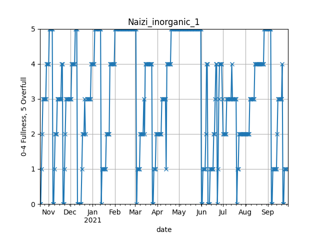
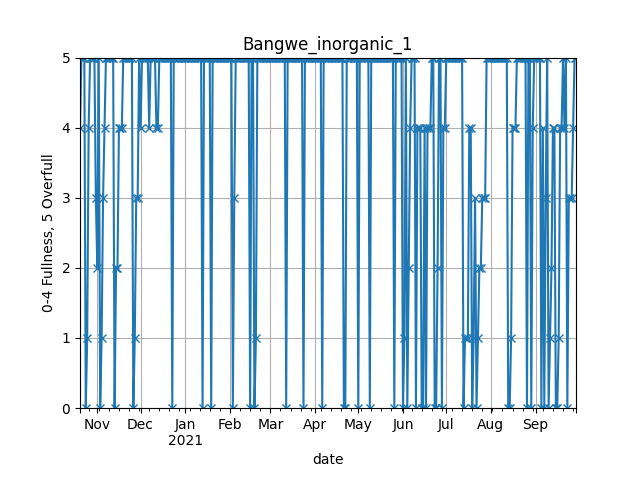
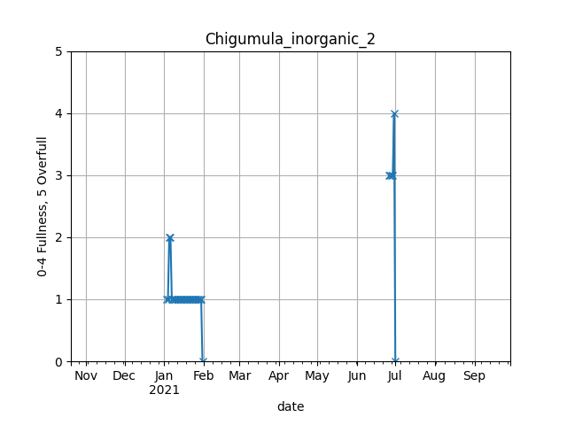
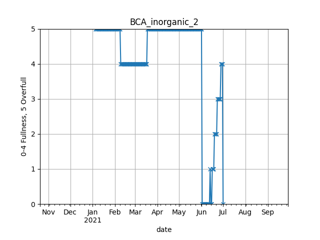

Optimization of solid waste in Blantyre, Malawi
Abstract
Introduction
The project seeks to minimize the costs of operation of the municipal solid waste management service in Blantyre Malawi.
Justification and Research Questions
- How can we model with limited data
- How many trucks are needed to service all skips? What would be the mileage and cost of servicing all skips without overflow?
- What routing schedule?
Data analysis
In order to formulate feasible and pertinent recommendations, parameters reflecting the situation need to be calculated. Specifically, the rate at which bins are filling, so as to know the frequency at which they need to be emptied.
Provided data
Set of skips
Skips filling data
Filling data for a number of skips is provided. Over a certain period of time (depending on the skip), a measurement on a scale from 1-5 was taken visually every day (generally). A score between 0 and 4 indicate the estimated fullness of the skip, while a 5 means the skip was overflowing. Three of these are shown in fig. 1. Fig. 1 (a) shows an ideal profile for data extraction. There are not too many spikes, the ramps are discernible, and there is a good number of them to draw averages. Fig. 1 (b) presents a bigger challenge, as it is difficult to make out the difference between




Fig. 1 especially fig. 1 (d)